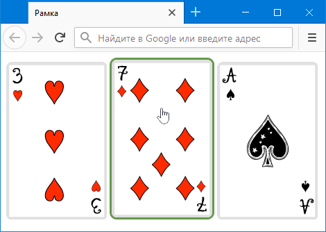
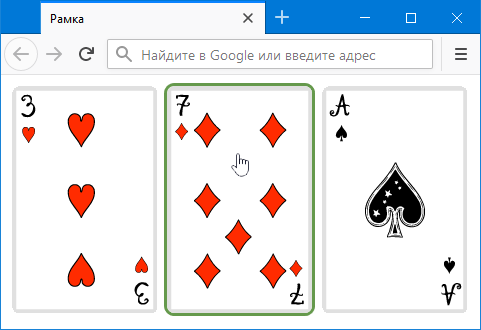

Как добавить рамку к изображению при наведении?
Рамка вокруг изображений делается с помощью свойства border, которое добавляется к селектору img. Чтобы рамка появлялась только при наведении курсора мыши на картинку, следует воспользоваться псевдоклассом :hover, как показано в примере 1.
Пример 1. Добавление рамки
<!DOCTYPE html>
<html>
<head>
<meta charset="utf-8">
<title>Рамка</title>
<style>
img:hover {
border: 3px solid #65994C; /* Параметры рамки */
border-radius: 10px; /* Радиус скругления */
}
</style>
</head>
<body>
<img src="image/3.png" alt="">
<img src="image/7.png" alt="">
<img src="image/ace.png" alt="">
</body>
</html>Результат данного примера показан на рис. 1.

Рис. 1. Изображение с рамкой
Свойство border влияет на общие размеры изображения, из-за чего при наведении на картинку происходит её сдвиг. Есть несколько методов, как обойти эту особенность.
Использование outline
Свойство border заменяем на свойство outline, которое обладает схожим поведением, но не оказывает влияния на размеры (пример 2).
Пример 2. Свойство outline
<!DOCTYPE html>
<html>
<head>
<meta charset="utf-8">
<title>Рамка</title>
<style>
img:hover {
outline: 3px solid #65994C; /* Параметры рамки */
}
</style>
</head>
<body>
<img src="image/3.png" alt="">
<img src="image/7.png" alt="">
<img src="image/ace.png" alt="">
</body>
</html>Учтите, что outline всегда выводит прямоугольную рамку, поскольку не поддерживает border-radius.
Прозрачная рамка
Устранить сдвиг картинки поможет прозрачная рамка то же толщины, что указана в border. Картинки предварительно выводим с прозрачной рамкой, а уже в :hover меняем у этой рамки цвет (пример 3). Тогда при наведении на изображение никаких смещений уже не будет. Для прозрачного цвета используем значение transparent, а цвет рамки меняется с помощью свойства border-color.
Пример 3. Прозрачная рамка
<!DOCTYPE html>
<html>
<head>
<meta charset="utf-8">
<title>Рамка</title>
<style>
img {
border: 3px solid transparent; /* Прозрачная рамка */
}
img:hover {
border-color: #65994C; /* Цвет рамки */
border-radius: 10px;
}
</style>
</head>
<body>
<img src="image/3.png" alt="">
<img src="image/7.png" alt="">
<img src="image/ace.png" alt="">
</body>
</html>Результат данного примера показан на рис. 2.

Рис. 2. Изображение с рамкой
См. также
- :focus для полей формы
- border
- border-bottom-color
- border-bottom-left-radius
- border-bottom-right-radius
- border-color
- border-left-color
- border-radius
- border-right-color
- border-top-color
- border-top-left-radius
- border-top-right-radius
- outline
- outline-color
- outline-offset
- outline-style
- outline-width
- Блочные элементы
- Граница в CSS
- Добавление треугольника
- Колесо для сокращённых свойств
- Круглые изображения
- Открываем блочную модель
- Повёрнутые рамки
- Рамка вокруг изображений
- Свойство border
- Строчные элементы